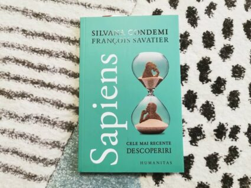

Lista celor mai citite carti in anul 2021
 ARCASUL FARA ARC-Intelepciunea asiatica poate fi extraordinar de utila in vremuri atat de tulburi. Daca timpul ne permite, putem citi cateva carti interesante.
ARCASUL FARA ARC-Intelepciunea asiatica poate fi extraordinar de utila in vremuri atat de tulburi. Daca timpul ne permite, putem citi cateva carti interesante.
Printre acestea vom include cu inima deschisa cartea Arcasul fara arc. Aceasta colectie extraordinara de povesti poate fi exact ceea ce aveti nevoie dupa o luna dificila si obositoare.
Fiecare poveste are un talc. Noi am citit cu atentie fiecare poveste. Uneori am ras si alteori am ramas pironiti intr-o bucla de intrebari introspective.
Stefan Liiceanu a facut o treaba minunata si merita un moment de recunostinta. El a creat o carte menita sa starneasca curiozitati si intrigi intelectuale. Merita citita? Sigur ca da!
 DESPRE LIBERTATE-In timpul studentiei, am avut placerea de a citi cartea Despre libertate, scrisa de celebrul John Stuart Mill.
DESPRE LIBERTATE-In timpul studentiei, am avut placerea de a citi cartea Despre libertate, scrisa de celebrul John Stuart Mill.
Atunci cand am vazut cartea la reducere, ne-am gandit sa o luam pentru o relectura la anii maturitatii.
Despre libertate este o carte de referinta pentru liberalismul clasic, cu radacini adanci in dezvoltarea Occidentului.
De asemenea, cartea poate deveni si un ghid de parenting, deoarece pledoaria pentru libertate individuala este atat de utila in stabilirea unei conexiuni cu realitatea si nu cu un imaginar buclucas.
Multi parinti ar beneficia de pe urma lecturii. Libertatea este un principiu greu de predat celor mici dar atat de necesar.
Persoanele obisnuite cu lecturile despre filosofie sociala si politica, pot citi cu deosebita placere lucrarea lui John Stuart Mill. Ne-a placut mult sa recitim cartea!
 CARTEA IERTARII-Iertarea este o enigma pentru multi oameni si o virtute pentru putini.
CARTEA IERTARII-Iertarea este o enigma pentru multi oameni si o virtute pentru putini.
Unele persoane nu sunt in stare sa se ierte pe ei insisi, traind cu dezamagiri si regrete. De multe ori uitam cum sa spunem „te iert sau iarta-ma”. Oare cum putem ierta? Oare stim cum? Grele intrebari.
Ne-am gandit de multe ori la aceasta necesitate a omului de a ierta si cum poate fi abordata. Asa am ajuns la Cartea iertarii, scrisa de Desmond Tutu.
Nu este o carte usoara. Din contra. Am putea spune ca este una din cele mai grele carti pe care le-am citit vreodata.
Nu este usor sa ierti. Cateodata nu suntem suficient de curajosi pentru a face acest lucru.
Asa ca este util sa urmam calea deschizatorilor de drumuri, cei care au imbratisat iubirea si iertarea, precum Desmond Tutu.
 IPOTEZA FERICIRII-Ideea de fericire ne-a intrigat mereu. Din nenumaratele carti despre fericire citite in ultimii ani, am cules putin cate putin.
IPOTEZA FERICIRII-Ideea de fericire ne-a intrigat mereu. Din nenumaratele carti despre fericire citite in ultimii ani, am cules putin cate putin.
Calea catre luminare implica dedicare si pasi marunti. Recent am avut ocazia de a urmari un podcast cu Joe Rogan si Jonathan Haidt.
Asa am ajuns la cartea Ipoteza fericirii, scrisa de cel din urma.
Primele pagini sunt o introducere atat de seducatoare.
Iubim aceasta carte, deoarece ne-a ajutat sa redescoperim inteleptiunea antica, corelata cu cele mai recente descoperiri ale psihologiei. Uneori anticii au avut dreptate iar alteori doar partial.
Fiecare societate este diferita, caracterizata de particularitatile stresului cotidian si evolutia tehnologiei.
Astazi avem nevoie mai mult de oricand de echilibru si un ghid catre fericire. Cartea este senzationala.
Am citit-o cu pofta si deosebita atentie. Jonathan Haidt este un autor deosebit, care duce cititorul intr-o aventura inteleapta.
Recomandam cu drag cartea tuturor celor care se afla in cautarea fericirii. Superba!
SAPIENS-Scurt, la obiect si clara. O carte destinata persoanelor grabite dar dornice sa tina pasul cu cele mai noi informatii despre cum am aparut ca specie pe acest Pamant.
Nu este o cartea usoara dar nici imposibila. Pasionatii de istorie si dezvoltare umana, vor aprecia aceasta carticica de doar 140 de pagini.
Credem ca Sapiens este usor de abordat, mai ales daca aveti cateva zile la dispozitie si doriti sa cititi ceva rapid. Istoria omului poate fi o enigma sau poate o revelatie extraordinara.
Autorii au reusit sa creeze o carte mai mult decat interesanta, pe care am citit-o cu deosebit placere.
 FOC SI SANGE-Ati urmarit Urzeala Tronurilor? Putine persoane au optat pentru a nu intra in universul Westeros.
FOC SI SANGE-Ati urmarit Urzeala Tronurilor? Putine persoane au optat pentru a nu intra in universul Westeros.
Autorul ne-a oferit in 2019 o carte mai mult decat interesanta: Foc si sange. Ne-am grabit sa luam cartea si sa descoperim lucruri interesante despre familia Targaryen.
Cu 100 de ani inainte de actiunea din ceea ce stim cu totii, John Snow, Cersei, Bran, Robb Stark si celelalte personaje, casa Targaryen a supravietuit decaderii Valyriei.
Acestia au supravietuit urgiei si s-au stabilit la Piatra Dragonului. Cartea nu este un roman traditional ci una de istorie fictionala.
A fost placut sa trecem prin cele 800 de pagini ale cartii, desi nu ne-am grabit.